晋江文学城での
作品購入・地雷投下方法
- 晋江文学城
- 登録方法
- チャージ方法
- 3-1. 淘宝で手数料無しのチャージ（お得！）
- 3-2. iOSアプリから直接チャージ（簡単だが手数料66%）
- 3-3. Androidアプリから支付宝でチャージ
- 3-4. web版のPayPal/銀行支払でチャージ
- 作品購入方法
- 地雷投下方法
- 5-1. アプリで地雷投下
- 5-1-1. 作品に地雷投下
- 5-1-2. 作者に地雷投下
- 5-2. web版で地雷投下
- 5-2-1. 作品に地雷投下
- 5-2-2. 作者に地雷投下
1.晋江文学城
図のような緑のアイコンのweb小説サイト。
日本のなろうと似ているが、投げ銭機能がついていたり、契約して有料公開章（VIP章）を設け、収入を得られたりする点において異なる。
公式サイトはこちら
アプリのダウンロードはこちら
2.登録方法
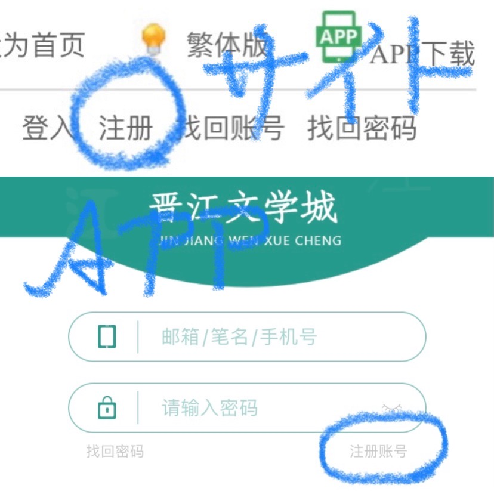
web版は右上の「注册」、アプリは入力項目右下の薄い字「注册账号」を押して登録。
「登入」はアカウントがある前提でのログインなので注意。
「邮箱」
メールアドレス
「请输入“密码”」
“パスワード”を入力して下さい
「发送“认证码”」
“認証コード”を送る（届いたら左側に入力）
「已阅读并同意……」
アカウントにおける規則、プライバシーポリシーに同意（チェックを入れる）
スライドバー
表示されるパズルのピースが埋まるようにスライドさせる（正確さより速さ）
3.チャージ方法
3-1.淘宝で手数料無しのチャージ（お得！）
1.
こちらの商品ページへ
※淘宝会員登録済の前提こちらのサイト様が登録方法を解説して下さっています。
2.注文する際、「订单备注」に晋江の会員番号を入れる
晋江会員番号の確認の仕方
web版の場合
画面一番上、名前の横の番号
アプリの場合
右上の人型👤マーク→名前の下の番号
この方法はiOS・Android共に使えます。
66%の手数料がない上に値引があってちょっとお得です（一瞬でチャージされます）
3-2.iOSアプリから直接チャージ（簡単だが手数料66%）
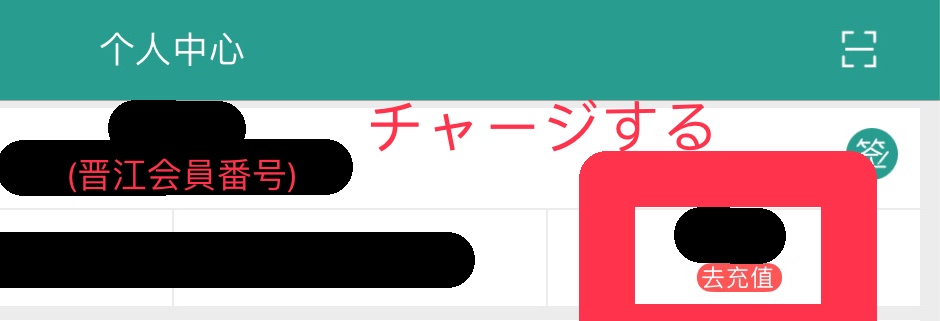
2.名前と会員番号の下の「去充值」をタップ
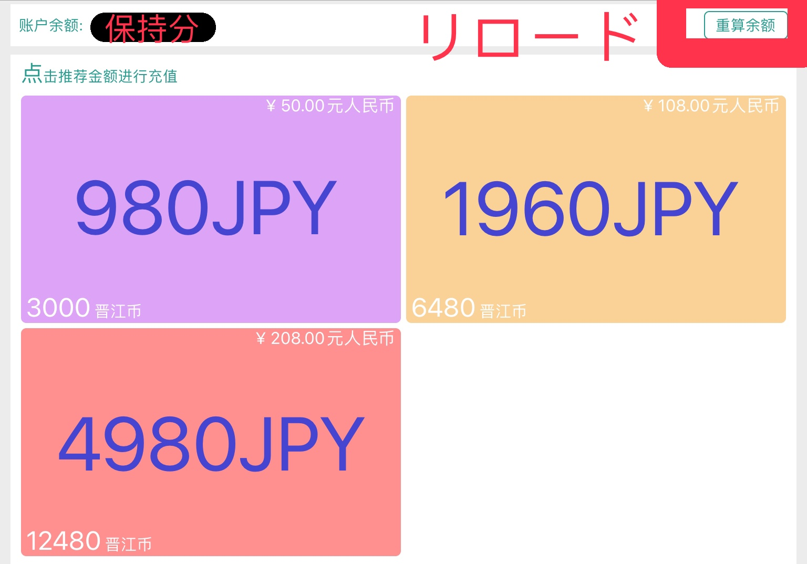
3.チャージする分をタップ
3000晋江币
→980円
6800晋江币
→1960円
12480晋江币
→4980円
3-3.Androidアプリから支付宝でチャージ
こちらの方が方法を解説して下さっています。
3-4.web版のPayPal/銀行支払でチャージ
こちらの方が方法を解説して下さっています。
※面倒なので非推奨
4.作品購入方法
作品購入の際にお得なのはアプリの方です。
web版……5晋江币/1000文字
アプリ……3晋江币/1000文字
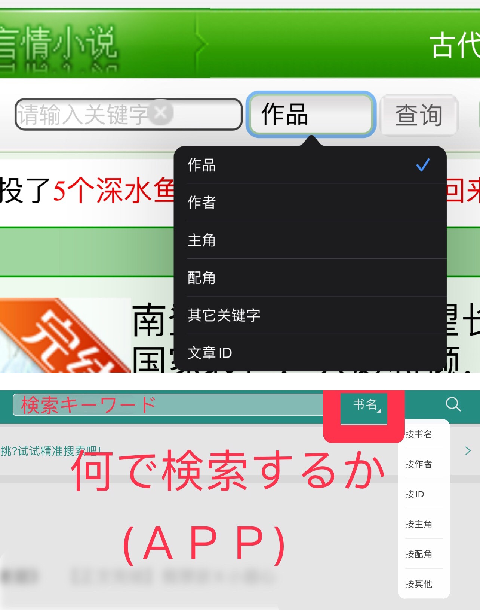
1.web版は画面上の「查询」、アプリは右上の虫眼鏡🔍マークから検索。
「按书名」
作品名で検索
「按作者」
作者名で検索
今回は例としてp大の『七爺』を購入してみます。
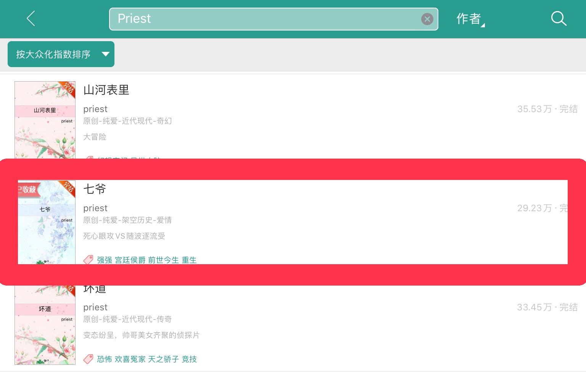
2.簡体字「七爷」を入力できる環境でなければ、右上を「按作者」に切り替え「priest」で検索。
※当サイトでは作品紹介欄に原作リンクを載せております。
web版をご利用の場合はそちらをご参照頂けると検索の手間が省けます。
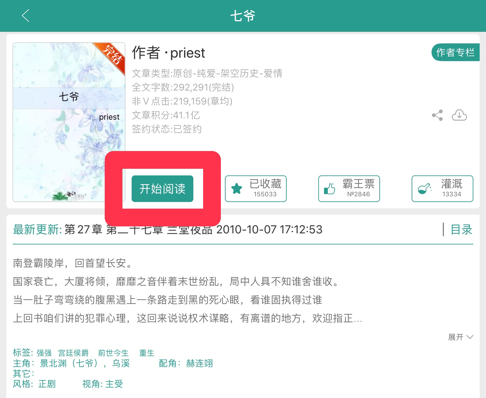
web版は3を飛ばす
3.作品ページから「开始阅读」をタップ
web版の場合
4.[VIP]マークの付いた任意の未購入の章をタップ
アプリの場合
4.右上の「购买&下载」を選択
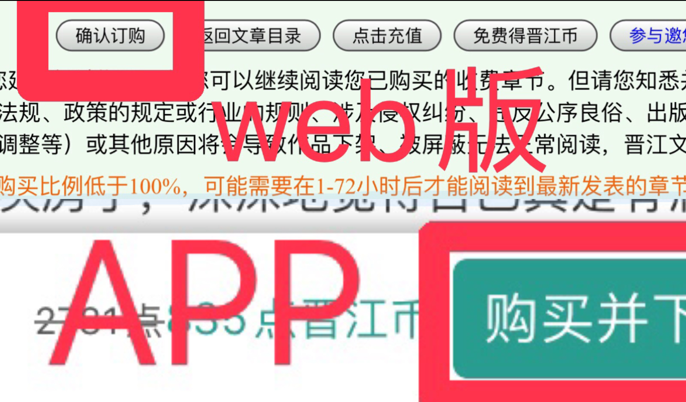
5.購入する章にチェックを入れる（全章なら「全选」を押す）→web版は「确认订购」、アプリは「购买并下载」をタップ。
「自动购买下五章」
ある章を開いた際に続きの五章を自動で購入
「自动续订」「是否自动续订……」
作品が更新された際にその章を自動で購入
「是否订阅……」
文章の更新通知を受け取る（無料）
5.地雷投下方法
5-1.アプリで地雷投下
5-1-1.作品に地雷投下
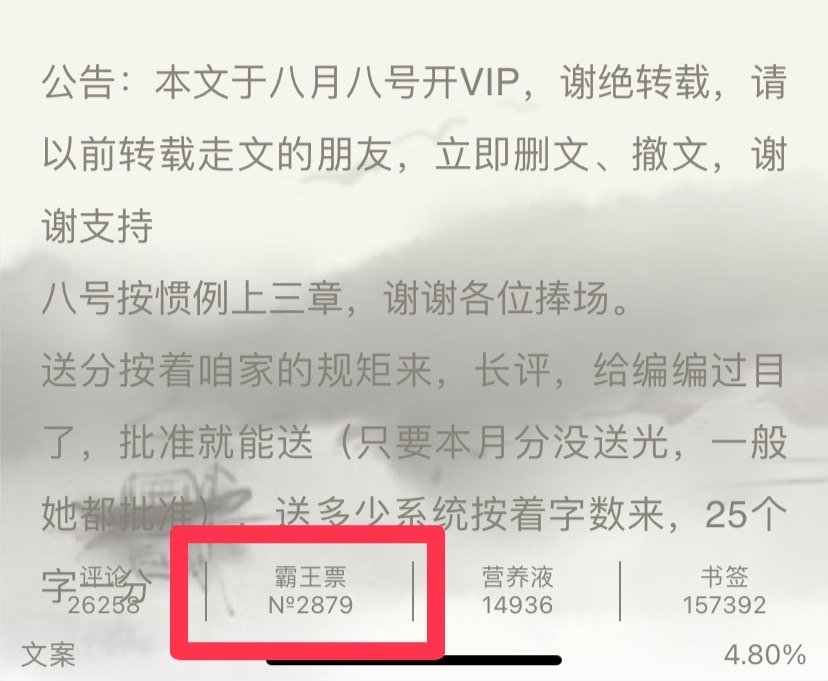
1.作品の任意の章を開き、章の最後の「霸王票」をタップ
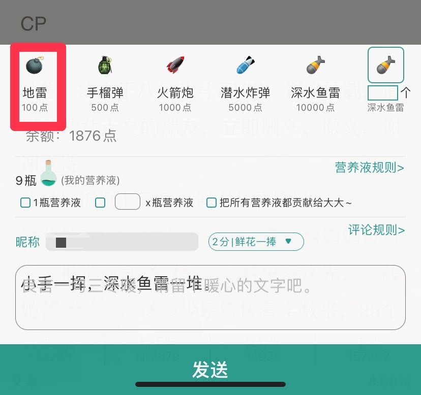
2.地雷を選択、「发送」で任意の回数投下（深水魚雷は個数を自由に入力できる）
5-1-2.作者に地雷投下
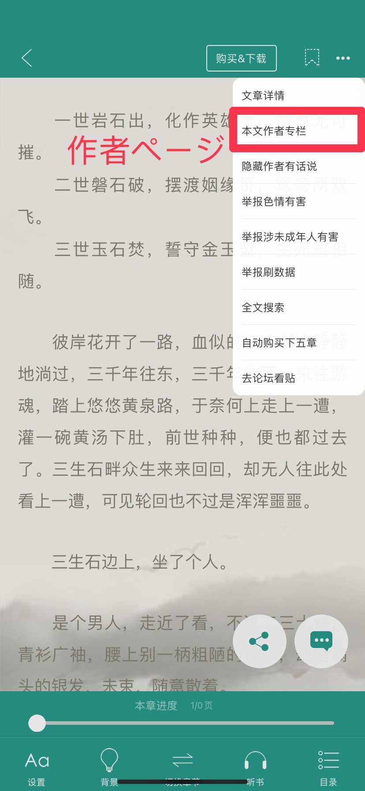
1.作品の任意の章を開き、右上の３つの点をタップ→「本文作者专栏」を選択
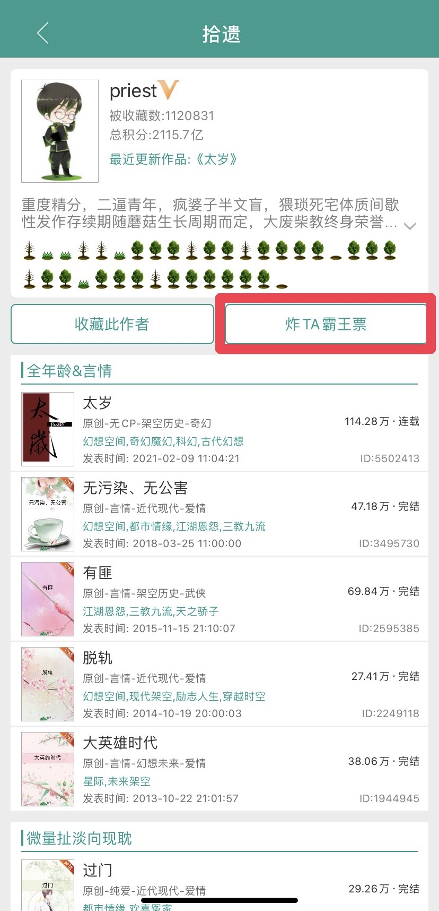
2.作者ページの作者紹介の下側、「炸TA霸王票」をタップ
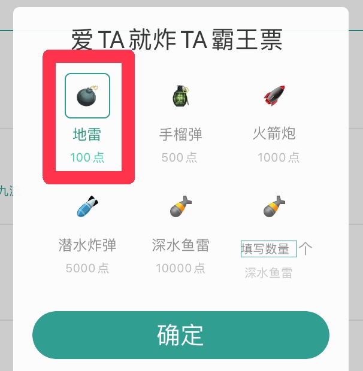
3.地雷を選択、「确定」で任意の回数投下
5-2.web版で地雷投下
web版で地雷投下履歴を必要とする場合は、3または4で完了画面が表示される度にスクリーンショット/写真を撮ってください。
5-2-1.作品に地雷投下
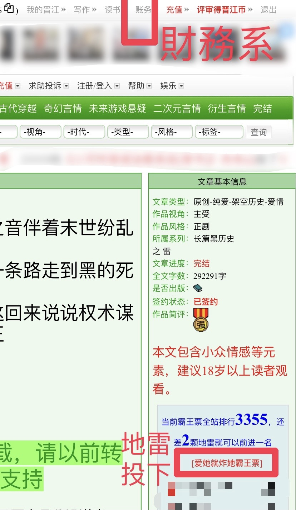
1.作品ページ右側「爱她就炸她霸王票」をタップ
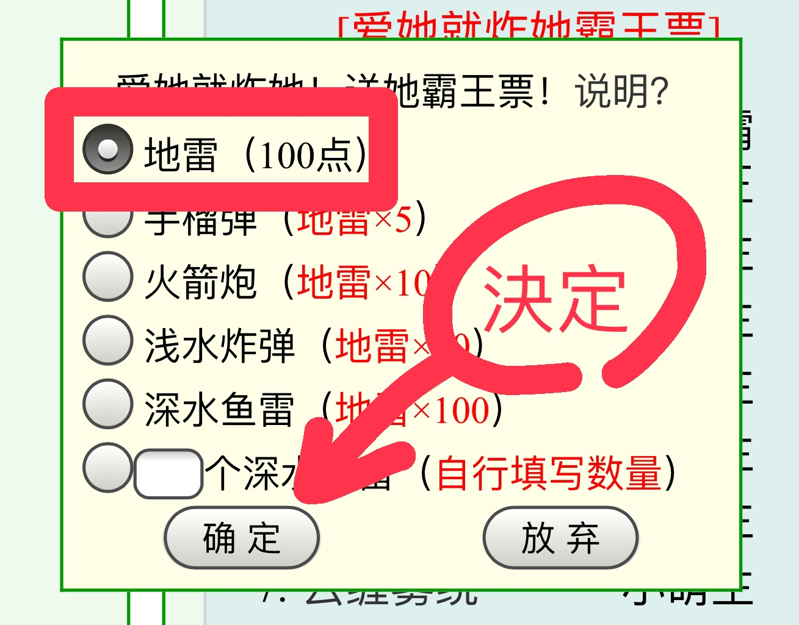
2.地雷を選択、「确定」で任意の回数投下
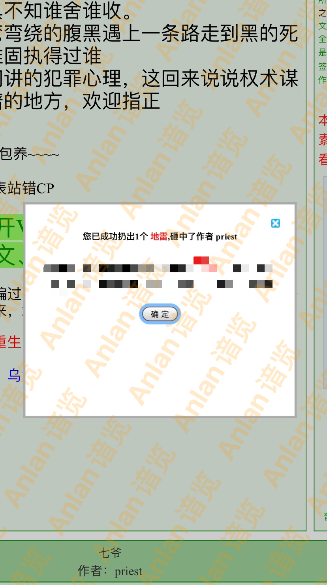
3.地雷投下完了
web版で地雷投下履歴を必要とする場合は、ここでスクリーンショット/写真を撮ってください。
5-2-2.作者に地雷投下
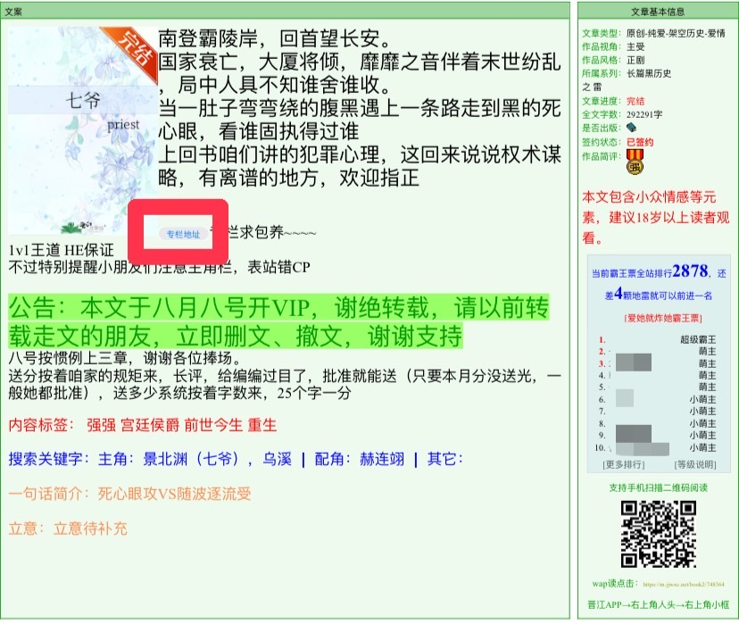
1.作品ページの説明欄「专栏地址」をタップ、作者ページへ
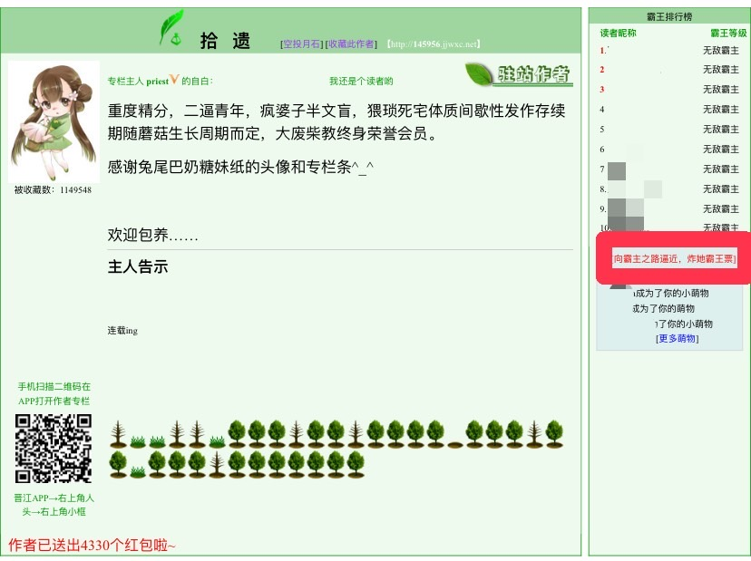
2.作者ページの右側「专栏向霸主之路逼近，炸她霸王票」をタップ
4.地雷投下完了
web版で地雷投下履歴を必要とする場合は、ここでスクリーンショット/写真を撮ってください。
晋江文学城での作品購入・地雷投下方法は以上となります。
作品購入・地雷投下の履歴の表示方法は下のリンクからご覧ください。